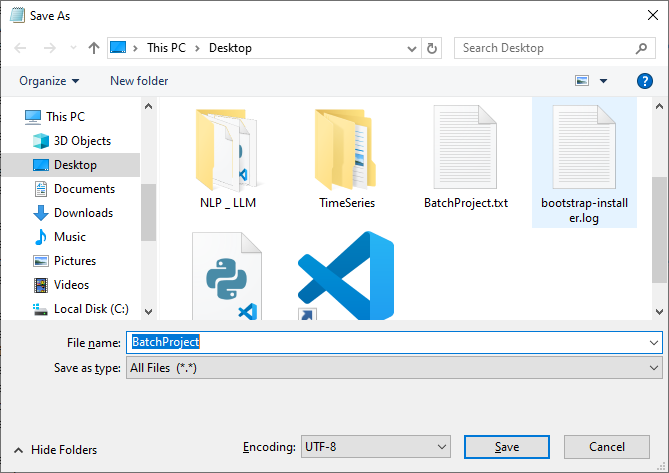
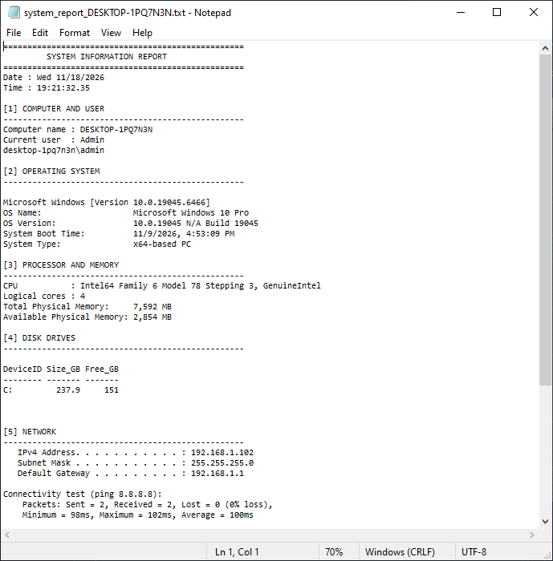

ساخت اسکریپت Batch ساده
Batch Automation — ساخت فایل bat برای اجرای خودکار چند دستور CMD و نمایش اطلاعات سیستم.
01 / هدف مأموریت
هدف این پروژه، ساخت یک فایل دستهای (Batch File با پسوند .bat) است که با یک بار اجرا، مجموعهای از دستورات CMD را بهصورت خودکار پشت سر هم اجرا کند و اطلاعات مهم سیستم را نمایش دهد. این اطلاعات شامل نام کامپیوتر و کاربر، نسخه سیستمعامل، پردازنده و حافظه RAM، وضعیت درایوهای دیسک، تنظیمات شبکه و پرمصرفترین فرایندها است. خروجی همچنین در یک فایل متنی ذخیره میشود تا بتوان از آن بهعنوان گزارش استفاده کرد. این اسکریپت جایگزین اجرای دستی و جداگانهی هر دستور میشود و در کارهای پشتیبانی IT صرفهجویی زمانی ایجاد میکند.
02 / ابزارها و محیط اجرا
Notepad: ویرایشگر متن برای نوشتن کد اسکریپت و ذخیره آن با پسوند .bat (با گزینه Save as type = All files).
Command Prompt (CMD): مفسر دستورات ویندوز که فایل .bat را اجرا میکند.
محیط اجرا: ویندوز ۱۰ یا ۱۱. دستورهای استفادهشده شامل hostname، whoami، ver، systeminfo، ipconfig، ping، findstr و برای اطلاعات دیسک و فرایندها یک فراخوانی کوتاه PowerShell هستند.
03 / مراحل انجام کار
- ایجاد فایل: Notepad را باز میکنیم و فایل را با نام system_info.bat ذخیره میکنیم. در پنجره Save، گزینه Save as type را روی All files میگذاریم تا پسوند .txt اضافه نشود.
- تنظیمات ابتدایی: با @echo off نمایش خود دستورات را خاموش میکنیم، با chcp 65001 کدپیج UTF-8 را فعال میکنیم و با title و color ظاهر پنجره را تنظیم میکنیم.
- تعریف مسیر خروجی: متغیر OUT را با نام کامپیوتر میسازیم تا گزارش در همان پوشهی اسکریپت ذخیره شود.
- نوشتن بخشهای گزارش: در برچسب :collect دستورات را بخشبهبخش مینویسیم: کاربر و کامپیوتر، سیستمعامل، پردازنده و حافظه، دیسکها، شبکه و پرمصرفترین فرایندها. از findstr برای فیلتر کردن خروجی طولانی systeminfo استفاده میکنیم.
- ذخیره و نمایش خروجی: خروجی برچسب با علامت > در فایل txt ذخیره میشود و سپس با type روی صفحه نمایش داده میشود. در پایان pause پنجره را باز نگه میدارد.
- اجرا و آزمایش: روی فایل دابلکلیک میکنیم (یا آن را در CMD اجرا میکنیم)، خروجی را بررسی میکنیم و فایل گزارش ایجادشده را باز میکنیم.
کد کامل اسکریپت
فایل کامل system_info.bat نیز همراه این پروژه در مخزن GitHub قرار گرفته است.
04 / یافتهها و تحلیل فنی
| بخش گزارش | دستور اصلی | اطلاعات نمایشدادهشده |
|---|---|---|
| کاربر و کامپیوتر | hostname · whoami | نام دستگاه و حساب کاربری فعال |
| سیستمعامل | ver · systeminfo | نام و نسخه ویندوز، نوع سیستم، زمان آخرین بوت |
| پردازنده و RAM | %PROCESSOR_IDENTIFIER% · systeminfo | مدل CPU، تعداد هستههای منطقی، RAM کل و آزاد |
| دیسکها | Get-CimInstance Win32_LogicalDisk | ظرفیت کل و فضای آزاد هر درایو |
| شبکه | ipconfig · ping | آدرس IPv4، Subnet Mask، Gateway و وضعیت اتصال |
| فرایندها | Get-Process | پنج فرایند با بیشترین مصرف RAM |
- ریدایرکت خروجی با > باعث میشود نتیجه هم روی صفحه نمایش داده شود و هم بهصورت یک فایل متنی قابل بایگانی و ارسال باشد.
- استفاده از findstr خروجی طولانی systeminfo را به چند خط مفید تبدیل میکند و گزارش خواناتر میشود.
- ابزار wmic در نسخههای جدید ویندوز ۱۱ حذف شده یا در حال حذف است؛ به همین دلیل برای دیسک و فرایندها از PowerShell استفاده شد تا اسکریپت روی نسخههای جدید هم کار کند.
- اجرای دستور systeminfo چند ثانیه طول میکشد؛ پیام «Collecting...» در ابتدای اسکریپت این تأخیر را برای کاربر توضیح میدهد.
- برای دسترسی به برخی اطلاعات ممکن است اجرای فایل با Run as administrator لازم باشد، اما بخشهای این گزارش با دسترسی عادی هم کار میکنند.
05 / مشکلات و راهحلها
| مشکل | راهحل |
|---|---|
| ذخیره فایل با نام system_info.bat.txt | انتخاب All files در Save as type و فعال کردن نمایش پسوند فایلها در File Explorer |
| بسته شدن سریع پنجره CMD بعد از اجرا | افزودن دستور pause در انتهای اسکریپت |
| خطای «wmic is not recognized» در ویندوز ۱۱ | جایگزین کردن wmic با دستورهای PowerShell (Get-CimInstance) |
| خروجی systeminfo بسیار طولانی بود | فیلتر کردن با findstr و نمایش فقط خطوط لازم |
| در ویندوز فارسیشده یا با زبان متفاوت، فیلتر systeminfo خروجی نمیدهد | فیلترها به متن انگلیسی خروجی وابستهاند؛ روی ویندوز با زبان انگلیسی اجرا شود یا عبارتهای findstr با زبان سیستم هماهنگ شوند |
| نمایش نادرست کاراکترها | استفاده از chcp 65001 و نگهداشتن متنهای اسکریپت به انگلیسی |
06 / مستندات تصویری




07 / جمعبندی و آموختهها
در این پروژه یاد گرفتم که با یک فایل سادهی Batch میتوان چندین دستور CMD را خودکار اجرا کرد و کارهای تکراری عیبیابی را به یک کلیک تبدیل کرد. با مفاهیمی مانند متغیرها، برچسبها و call، ریدایرکت خروجی، فیلتر با findstr و ترکیب CMD با PowerShell آشنا شدم و دیدم که هنگام نوشتن اسکریپت باید سازگاری با نسخههای مختلف ویندوز را هم در نظر گرفت.
این اسکریپت میتواند پایهای برای ابزارهای پشتیبانی IT باشد؛ برای مثال میتوان بعدها بخشهایی مثل بررسی فضای دیسک، پاکسازی فایلهای موقت یا گرفتن گزارش دورهای با Task Scheduler را به آن اضافه کرد.